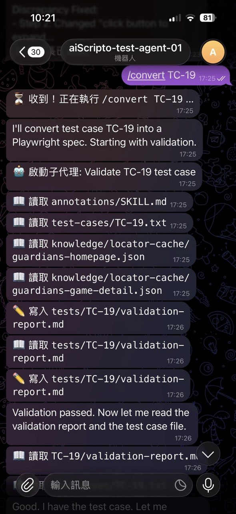
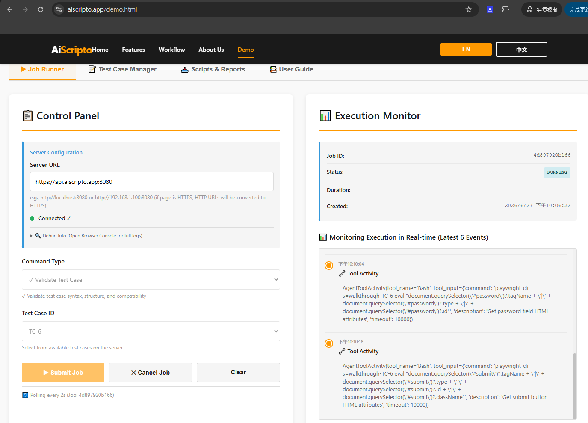

❮
❯
Industry-leading AI-powered test automation capabilities
QA engineers can write tests without learning Playwright or TypeScript. Simply describe manual test steps, and AiScripto's AI engine automatically converts them to production-grade Playwright code. Supports Markdown with conditional logic and variables.
Example:
Step 1: Navigate to Order Management page
Step 2: Click "Create Order" button
Step 3: Enter "{{VAR:orderNumber}}" in Order Number field
Step 4: [IF-THEN] If confirmation dialog appears, click OK
Step 5: Verify order appears in the table
↓
↓
Features 6 slash commands (/import, /validate, /convert, /verify, /parameterize, /walkthrough) for a complete end-to-end testing pipeline.
When UI changes cause test failures, AiScripto automatically:
Reduced time wasted on maintaining fragile selectors, leading to a 90% drop in test failure rates.
AiScripto自動生成遵循Playwright官方最佳實踐的頁面物件模型（POM）。無需手動編寫和維護元素選擇器。
Prioritize ARIA roles and attributes over brittle CSS selectors.
Generated POMs can be reused across multiple tests.
Builds a centralized knowledge base to accelerate test generation for subsequent pages.
Automatically generated code includes comments and type definitions.
// Auto-generated Page Object Model
export class OrderPage {
readonly page: Page;
// Order number input field
readonly orderNumberInput = this.page.getByRole(
'textbox', { name: /Order Number/ }
);
// Create button
readonly createButton = this.page.getByRole(
'button', { name: /Create/ }
);
// Order table
readonly orderTable = this.page.getByRole(
'table', { name: /Order List/ }
);
async fillOrderNumber(number: string) {
await this.orderNumberInput.fill(number);
}
async clickCreate() {
await this.createButton.click();
}
}
AiScripto can automatically identify hard-coded test data and extract it to JSON files. This allows the same test to be executed with different data combinations.
test-data.json
[
{
"orderId": "ORD-001",
"customer": "ABC Corp",
"amount": 5000
},
{
"orderId": "ORD-002",
"customer": "XYZ Ltd",
"amount": 8500
},
{
"orderId": "ORD-003",
"customer": "QRS Inc",
"amount": 12000
}
]
3 data combinations = 3 complete test executions
AiScripto is vendor-agnostic, supporting combinations of multiple AI model vendors and cloud platforms. Choose the configuration that best fits your enterprise needs.
Support Claude Fable, Claude Opus, Claude Sonnet, Claude Haiku and more
Support Claude Fable, Claude Opus, Claude Sonnet, Claude Haiku and more
Support Claude Fable, Claude Opus, Claude Sonnet, Claude Haiku and more
Deploy to Lambda, EC2, and ECS containers.
Deploy to App Service, VM and Container Instances.
Deploy to Cloud Run, Compute Engine VMs, and GKE containerized environments.
Windows 11, Windows Server 2022/2025, laptop, PC and Kubernetes self-managed
Avoid vendor lock-in. Easily switch between different AI models and cloud platforms to achieve optimal cost-effectiveness and performance.
Each test execution generates detailed logs and execution traces for analysis and improvement.
Complete visual record of each test step
Record all DOM interactions and selector queries
Load times, interaction delays and other key metrics
Detailed pass/fail analysis and trend reports
Centralized cloud-based logging for enterprise-scale monitoring and compliance
AiScripto provides comprehensive cloud logging capabilities, integrating with major cloud providers' logging services for enterprise-scale monitoring, analysis, and compliance requirements.
Real-time log streams for all test execution events
CloudWatch Insights for advanced querying and analysis
Automatic retention policies with configurable periods
Integration with CloudWatch Dashboards for visualization
Unified logging platform across all test resources
Advanced filtering and search capabilities
Log-based metrics for trend analysis and alerting
Integration with Cloud Monitoring dashboards
Application Insights for detailed test performance tracking
Log Analytics Workspace for custom queries (KQL)
Alert Rules for proactive issue detection
Integration with Azure DevOps pipelines
| Log Type | Cloud Storage | Purpose | Retention Period |
|---|---|---|---|
| Execution Logs | CloudWatch / Stackdriver / Azure Monitor | Test execution steps, results, and state changes | 30 days (configurable) |
| Trace Files | AWS S3 / Google Cloud Storage / Azure Blob | Detailed Playwright interaction records and browser events | 60 days (configurable) |
| Screenshots | Object Storage (S3/GCS/Blob) | Visual verification and debugging aid | 90 days (configurable) |
| Performance Metrics | Time-series Database | Response times, load metrics, and trend analysis | 1 year (configurable) |
| Audit Logs | Cloud Logging Services | All operational events for compliance and security | 2 years (compliance requirement) |
All cloud logs are encrypted in transit (TLS 1.3) and at rest (AES-256).
Support for fine-grained access control, audit trails, and long-term archival for regulatory compliance (SOC 2, GDPR, HIPAA, etc.)
AiScripto supports three major interaction channels, allowing different user groups to interact with the system in the way that suits them best.
Local Python Textual interactive interface, perfect for developers/QA for rapid iteration and full command set access.
🔄 Multi-Turn Q&A
Seamlessly answer AI queries during execution (e.g., verifying captcha or guiding complex steps).
Remote real-time messaging interaction, suitable for mobile devices and asynchronous communication.

Modern web graphical interface communicating via REST API, ideal for cross-departmental collaboration and visual reporting.

AiScripto seamlessly integrates with your existing development workflow.
Support extracting test cases from multiple sources through the MCP standard interface:
| Metric | Manual Playwright Development | AiScripto | Improvement |
|---|---|---|---|
| Single Test Development Time | 2-3 hours | 15-20 minutes | 8-10x Faster |
| Page Object Creation Time | 1-2 hours | 5-10 minutes | 10-12x Faster |
| Test Failure Recovery Time | 30-60 minutes | Auto-Repair | 100% Automated |
| Required Engineer Skills | Advanced TypeScript/Playwright | Basic QA Skills | Code-Free |
| Annual Test Maintenance Cost | $150K-250K | $20K-40K | Save 75-85% |
Explore the intuitive interfaces of AiScripto across different channels. Click any image to view details.
Modern, feature-rich web interface for managing test jobs, monitoring execution, and analyzing results.
Comprehensive test case creation and management interface.
View generated scripts and download comprehensive test reports.
Mobile-friendly Telegram bot interface for on-the-go test automation and real-time communication.
Whether you prefer the rich desktop experience of the Web UI or the convenience of Telegram Bot on mobile, AiScripto delivers a consistent, intuitive interface that empowers your team to work efficiently.